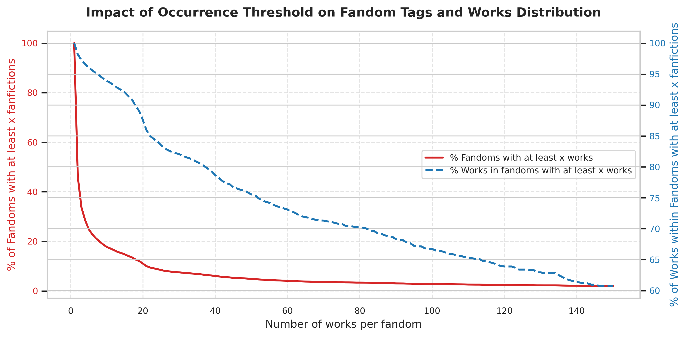
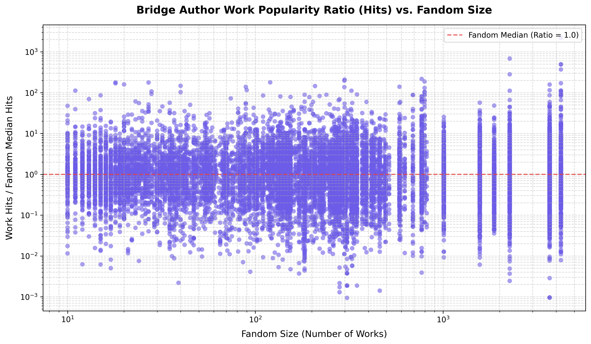
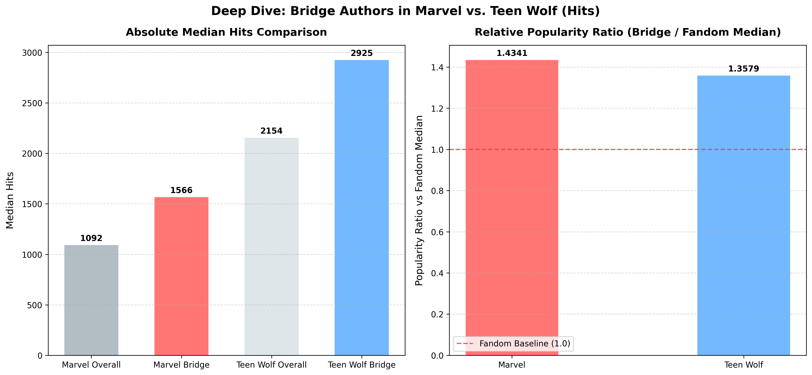

In the massive digital archive of Archive of Our Own (AO3), millions of fanfictions exist across thousands of distinct fandoms. While individual fandoms possess their own dedicated writer communities, authors frequently cross boundaries to write in multiple universes. This article visualizes the structured relationships (co-occurrences and clustering) between fandoms, maps crossover authors acting as bridges across distinct communities, and evaluates if these bridge authors achieve more relative popularity in smaller fandoms.
1. Fandom Co-occurrences & Co-Clustering
To understand how fandoms relate, we analyzed works tagged with multiple fandoms. When tags appear together on a work, they represent a co-occurrence link. Instead of simple filtering, we built a co-occurrence network on all 8,205 unique fandom tags, clustering tags with a high similarity threshold into cohesive clusters before filtering.
This pre-clustering method successfully resolved noise and giant components, merging closely related tags (such as consolidating Captain Marvel (2019) into the parent Marvel Cinematic Universe Cluster) while isolating accidental crossover links.
The interactive map above allows you to explore these co-occurrence relations. You can filter the minimum work occurrences threshold in real-time, search for specific fandom tags to zoom in, and see how nodes readjust slowly and smoothly to the layouts.
2. Fandom Tag Occurrences Frequency & Distribution
To determine reasonable baseline occurrences filters, we plotted the cumulative distribution of fandom sizes in our cleaned dataset:

The long tail of the distribution shows that while a few giant fandoms (like Marvel or Harry Potter) accumulate thousands of works, the average occurrences per fandom is 8.63 with a median of 1.00. This highlights the massive abundance of smaller, niche fandom tags.
3. Authors as Bridges Across Fandoms
When authors write in multiple distinct fandoms, they build structural crossover bridges. We mapped this cross-cluster communication network by calculating the Author Overlap Index between all cluster pairs:
AO(X, Y) = |Authors(X) ∩ Authors(Y)| / min(|Authors(X)|, |Authors(Y)|)
In the bridge map above, each node represents a fandom cluster (its size proportional to the unique author count). Adjusting the "Min Bridge Authors" slider dynamically adjusts the network, showcasing how strong or weak the connections are. You can use the Yes/No buttons to toggle the visibility of isolated clusters.
4. Do Bridge Authors Drive Popularity in Smaller Fandoms?
Finally, we investigated whether bridge authors achieve relatively higher popularity in smaller fandoms. For each bridge author's work, we calculated its popularity ratio (e.g., Hits, Kudos, or Comments) compared to the average and median values within that specific fandom:

By calculating the Spearman rank correlation coefficient, we found that for Hits binned by the first fandom tag, the correlation is slightly negative (-0.0145, p-value: 7.202e-02). This indicates a very minor, statistically non-significant negative correlation, suggesting that while bridge authors are highly active, their popularity relative to the fandom baseline remains mostly uniform across both small and large fandoms.
5. Deep Dive: Marvel vs. Teen Wolf Crossover
To further investigate this behavior, we isolated the crossover bridge authors between a mega-fandom (Marvel Cinematic Universe/Avengers) and a relatively small fandom (Teen Wolf). By applying regex filtering to the raw Fandom Tags (excluding crossover works to focus on separate writing instances and preventing duplicate rows), we identified 10 true bridge authors.
Our analysis shows that works by these bridge authors in the Teen Wolf fandom achieved a median popularity of 2925 Hits, compared to 1566 Hits in Marvel. However, when comparing their popularity relative to the fandom's baseline, they achieved a higher relative ratio in Marvel (1.43x the overall median) than in Teen Wolf (1.36x).
